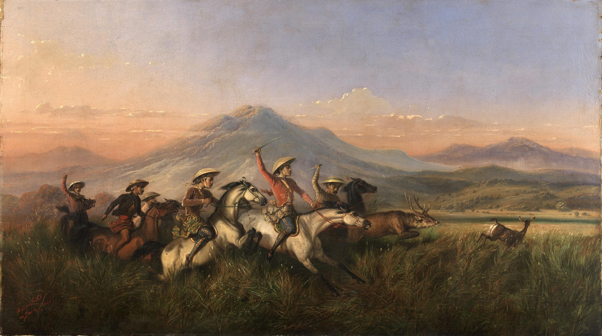
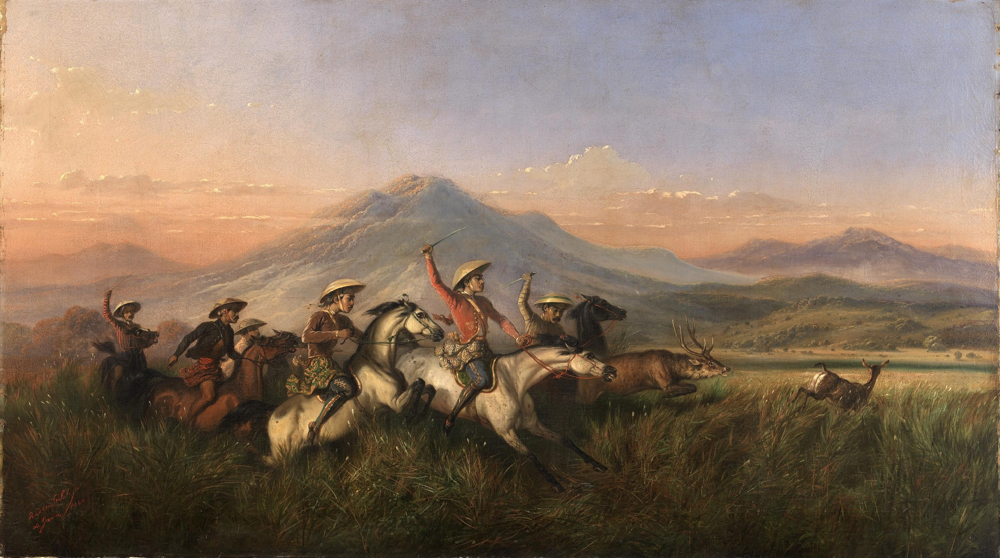
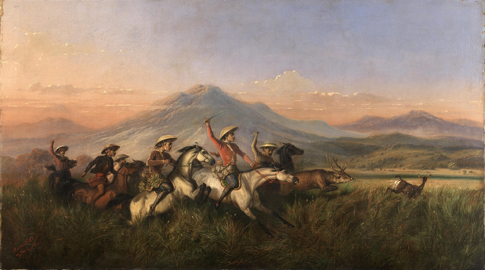
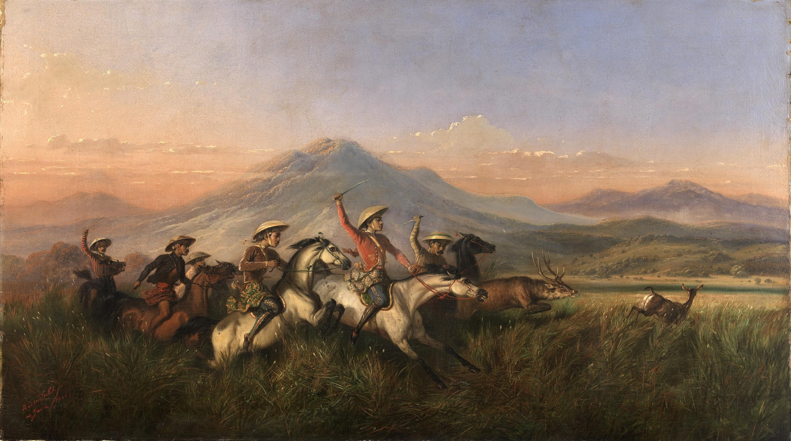

Multiple Modernisms
in the Americas
For many years these works, along with other beloved paintings and sculptures, have been located in galleries 262–65 in the Rice Building. We in Arts of the Americas recently re-envisioned and reinstalled these galleries, seeking to present art of North America in a more lively and engaging manner. Our intention was to contextualize old favorites in new ways, introduce a greater variety of objects, and offer more complex and interesting narratives that highlight the true breadth and depth of our collection.
Andrew James
associate curator
With this reinstallation, it was important to bring works by Native American artists into these galleries to create a more inclusive, expansive, and simply more accurate presentation of American art. These additions do not replace our dedicated gallery of Native and Indigenous art in the Morton Wing, but rather are a complement to it.